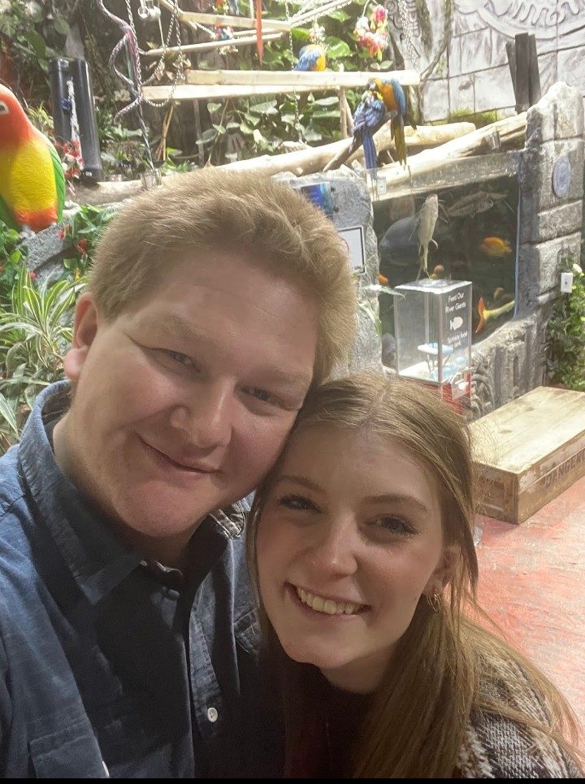

Our Story

Bracken and Madie first met when Madie moved to Virginia while they were both in high school. They became fast friends through time spent together in band class and
at church. As they both got into High School they stayed good friends and spent a lot of time together at church activites like mutual, dances, and trek, and at
school in band class and seeing each other in the hallways and cafeteria. Madie moved back to Missouri in the fall of 2019 and they did not think they would see
each other again.
Early in 2020, January 4th to be exact, Madie was the first to reach back out to Bracken after she got a phone for Christmas and worked up the courage
to text him. Bracken responded enthusiastically to her reaching out and they began to talk everyday at every chance they could get. Early in February 2020, Madie asked
Bracken if he ever had a crush on him, he responded and said yes. After working up some courage, he continued and told her that he still did like her. She responded with
good to know. Evenutually she did say she liked him too. Later in the month, after talking everyday for weeks, Madie was the first to tell Bracken that she loved him on
February 20th, 2020. Bracken of course told her he loved her too.
They continued messaging and calling whenever they could and became even better friends as they got to
know everything about each other. That summer Bracken was able to see Madie in Missouri where they shared their first kiss and decided that their feelings were very much
real, and were not something that just existed over the phone. They went another year talking as much as they could and becoming the best of friends, telling each other
evrything and becoming very close with one another. Bracken graduated high school in the spring of 2021 and saw madie one last time in the summer before leaving for a
two year mission. Bracken served God while Madie finished up her last year of High School and then left for two semesters of college at BYU-I.
They continued to message
each other every monday while Madie was in school and Bracken was on his mission. In the spring of 2023, Madie left for her own mission and they were able to share and
talk about amazing experiences they both had as they focused on serving the Lord. Bracken got home from his mission in the fall of 2023 and after working for two months,
also went to BYU-I and began his college schooling while waiting patiently for Madie to get home. Madie served faithfully and saw many amazing miracles on her mission
and returned home in the winter of 2024. Bracken finished up his first two semesters of college, spent the summer and fall working, and went back to school in January
2025 to continue his education and finally be back with Madie.
Bracken and Madie met at BYU-I in the begininning of January, both starting their third semester in
school. Being beck together, it was easy for both of them to see that the relationship they had built up talking for so long, bloom into a wonderful friendship and
relationship that allowed for them to build each other up, support each other, laugh everyday, and love each other. After getting engaged in May and planning to get
married in August, they plan to stay in Rexburg until they finish school and then see where life takes them.